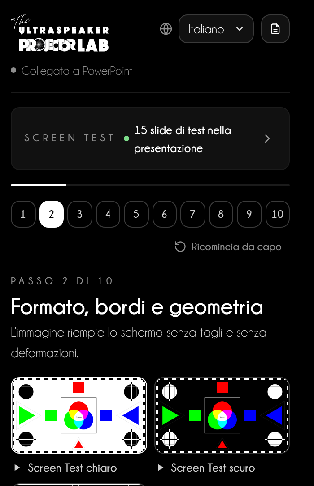
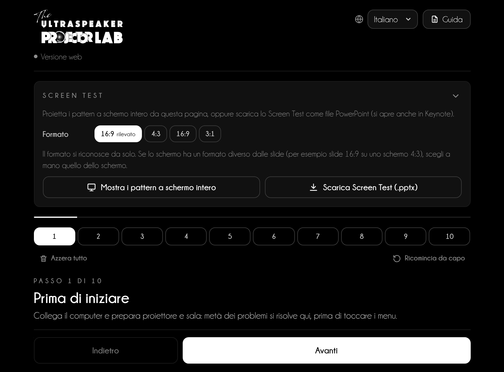
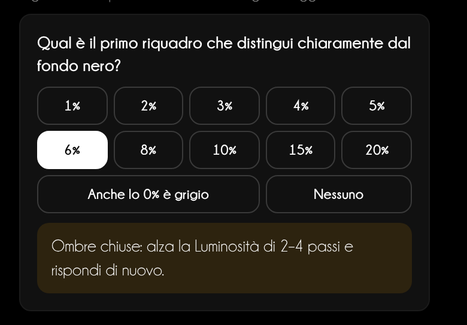
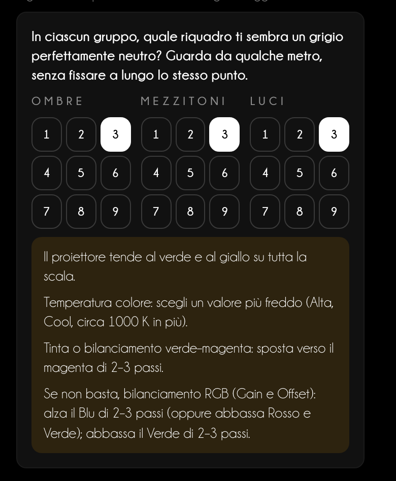
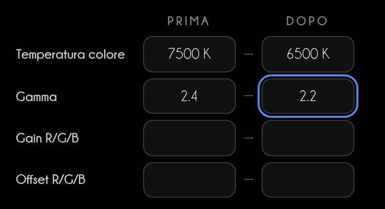
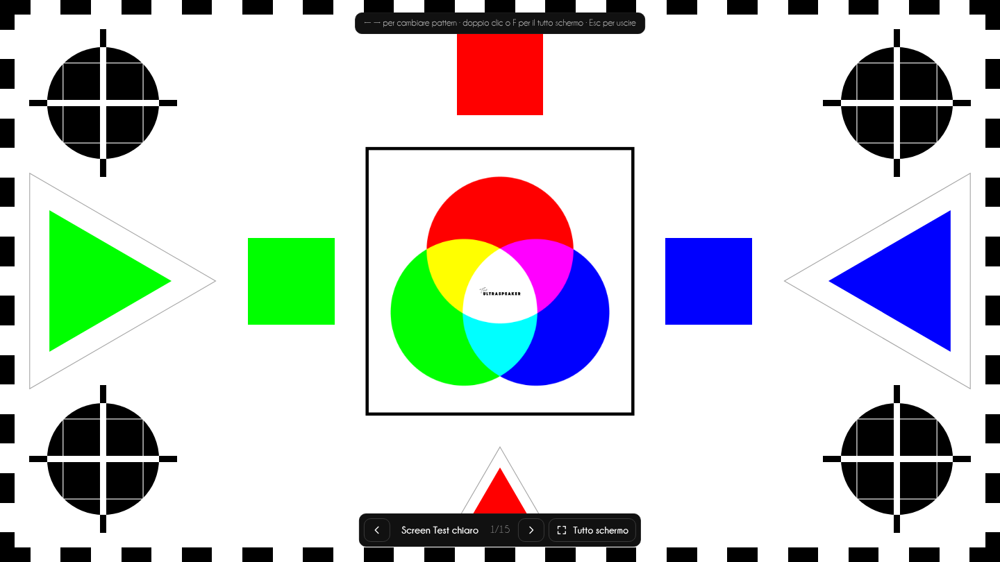
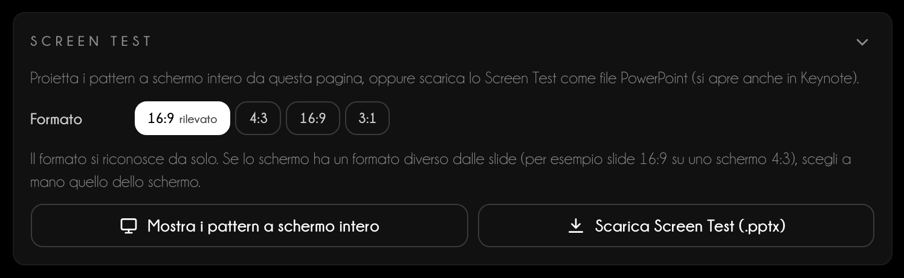
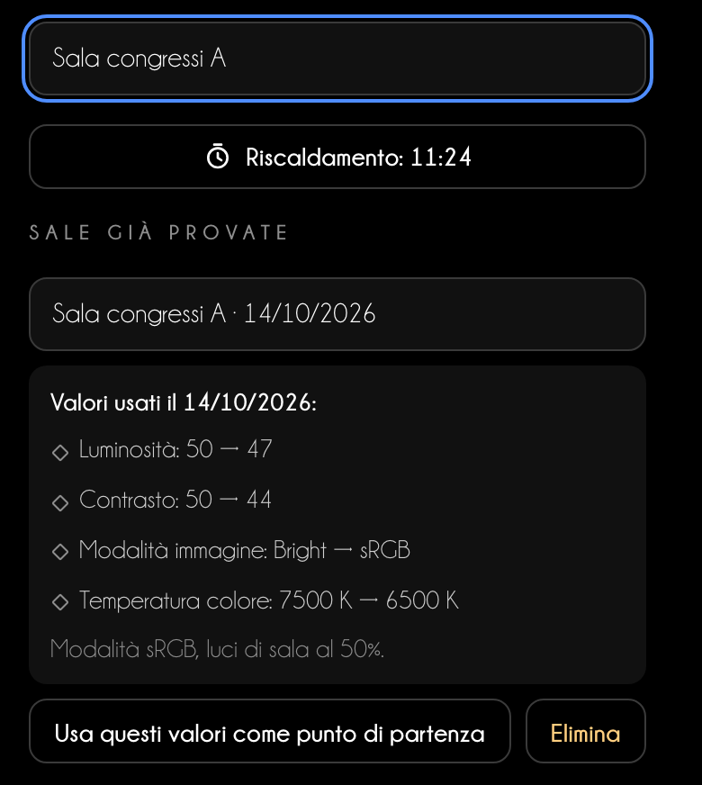
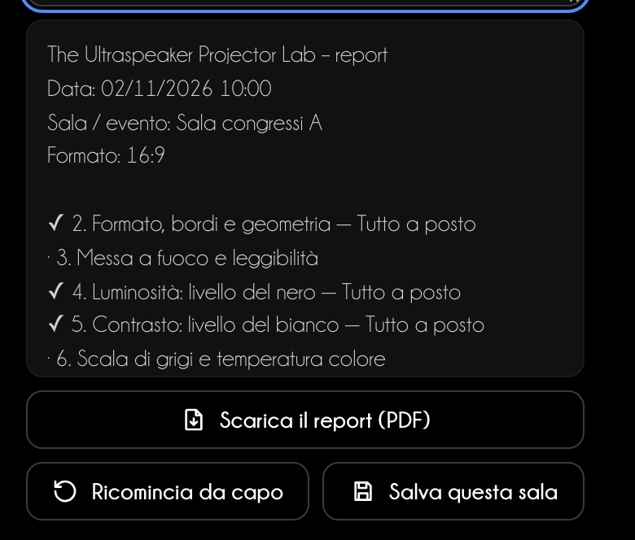

Guida d’utilizzo
Il proiettore a posto
prima di parlare
Projector Lab ti guida in 10 passi a regolare formato, fuoco, nero, bianco e colore del proiettore, con pattern di test fatti per la tua presentazione.
Guida d’utilizzo
Projector Lab ti guida in 10 passi a regolare formato, fuoco, nero, bianco e colore del proiettore, con pattern di test fatti per la tua presentazione.
Indice
Ogni sala ha un proiettore diverso. Il Projector Lab ti fa proiettare un pattern di test, ti dice cosa guardare e quale menu del proiettore regolare. In 10–15 minuti le tue slide e le tue foto cliniche si vedono come sul tuo monitor.
In PowerPoint
Scheda Home → gruppo The Ultraspeaker → Projector Lab. Il pannello si apre a destra. Inserisci le slide di test aggiunge alla presentazione 15 slide di test nel suo formato, con le istruzioni nelle note del relatore.
Nel browser
niki977.github.io/ultraspeaker-projector-lab, senza installare nulla. Mostri i pattern a schermo intero sul proiettore o scarichi lo Screen Test in .pptx per PowerPoint e Keynote. Sul telefono la procedura resta a portata di mano.
Cosa resta sul dispositivo
Lingua, procedura in corso, timer e sale salvate restano nella memoria del browser o di PowerPoint. Nessun dato viene inviato a un server.

| Funzione | PowerPoint | Versione web |
|---|---|---|
| Slide di test nella presentazione | Sì | — |
| Pattern a schermo intero | In una finestra | Sì |
| Screen Test .pptx da scaricare | — | Sì |
| Foto clinica | Nella slide di test | Nel pattern a schermo intero |
| «Azzera tutto» | — | Sì |
La stessa pagina nella versione web e nel pannello: in alto lo Screen Test, sotto i 10 passi.

1 2 3 4 5 6 7Ogni passo ha la stessa struttura. Proietti il pattern, guardi dal fondo della sala, rispondi alla domanda e il Lab ti dice quale menu regolare, in che direzione e di quanto.
La domanda «Cosa vedi?»
Nei passi 4–8 tocchi quello che vedi: per esempio il primo riquadro che si distingue dal nero. La risposta indica la correzione e l’esito del passo si aggiorna da solo.
Dominante di colore
Nel passo 6 scegli, in ogni gruppo, il grigio che ti sembra più neutro. Se non è il 5 al centro, il Lab riconosce la dominante e indica temperatura colore, tinta o guadagno RGB.


Valori usati
Annota le impostazioni del proiettore prima e dopo la regolazione: finiscono nel report e nelle sale salvate.

Collega il computer e prepara proiettore e sala: metà dei problemi si risolve qui, prima di toccare i menu.
L’immagine riempie lo schermo senza tagli e senza deformazioni.
Stelle nitide al centro e agli angoli, e il corpo minimo del testo leggibile dal fondo della sala.
Dettaglio nelle ombre senza un nero grigiastro.
Bianchi pieni che non si bruciano: i dettagli chiari restano visibili.
Grigi neutri e passaggi regolari: è la base perché anche i colori siano giusti.
Colori pieni ma fedeli, senza tinte spostate né zone che si impastano.
Le tue foto cliniche devono mostrare smalto, margini e tessuti come li vedi sul monitor.
Per vedere una tua foto clinica usa «Prova con una tua foto clinica» («Inserisci una tua foto clinica» in PowerPoint), oppure trascina la foto, JPG o PNG, nel riquadro tratteggiato. Nella versione web compare un’anteprima: premi «Proietta la foto» per vederla nel pattern «La tua foto».
Nessuna macchia, zona colorata o punto fisso nell’immagine.
Controlla una slide vera, annota le impostazioni e togli le slide di test.
15 pattern, nello stesso ordine dei passi. Si adattano al formato reale dello schermo: i bordi del pattern coincidono con quelli del proiettore.

Nella versione web scegli il formato dello schermo e premi Scarica Screen Test (.pptx). Il file contiene le 15 slide con le note; Keynote lo apre con File → Apri.

1 2 3| Passo | Pattern |
|---|---|
| 2 · Formato, bordi e geometria | Screen Test chiaro, Screen Test scuro, Griglia |
| 3 · Messa a fuoco e leggibilità | Fuoco |
| 4 · Luminosità: livello del nero | Nero |
| 5 · Contrasto: livello del bianco | Bianco |
| 6 · Scala di grigi e temperatura colore | Grigi, Grigi a confronto |
| 7 · Colore e saturazione | Barre SMPTE, Rampe colore |
| 8 · Riferimenti clinici | Clinico, La tua foto |
| 9 · Uniformità e pulizia | Bianco pieno, Grigio pieno, Nero pieno |
Tre strumenti per non ripartire da zero in ogni sala.
Al passo 1 premi Avvia timer riscaldamento (15 min). Con la lampada servono almeno 15 minuti, meglio 30; laser e LED si stabilizzano in 5–10.

Al passo 10 il report riassume data, formato, esiti, risposte e valori. Aggiungi una nota e premi Scarica il report (PDF): ottieni un PDF da mandare alla regia (nel pannello si apre nel browser).
Ricomincia da capo azzera esiti, risposte e valori ma tiene le sale salvate. Nella versione web Azzera tutto cancella anche le sale e il formato.

La regolazione migliore non sostituisce la preparazione.
Consiglio da speaker
Arriva in sala 30 minuti prima. Accendi il proiettore subito, fai la procedura mentre si scalda e chiudi con la tua slide più impegnativa: una foto clinica, il testo più piccolo, un grafico.
Se la regia non ti fa toccare il proiettore
Chiedi tre cose precise: modalità sRGB o Presentazione, overscan spento, keystone al minimo. Il resto lo fai dal computer: risoluzione nativa, formato colore RGB Full, Night Shift e Luce notturna spenti.
| Schermo | Cosa succede | Cosa fare |
|---|---|---|
| 4:3 con slide 16:9 | Bande nere sopra e sotto | Accetta le bande; scegli 4:3 nello Screen Test per verificare i bordi dello schermo |
| 16:9 con slide 4:3 | Bande nere ai lati | Non allargare l’immagine: i cerchi diventerebbero ovali |
| 3:1 (schermi panoramici) | Slide piccole al centro o tagliate | Chiedi il formato prima; prova con lo Screen Test 3:1 e il testo più grande |
Assistenza
Scrivi a info@theultraspeaker.com indicando il computer e la versione di PowerPoint.

Knowledge is not enough.
From expert to Ultraspeaker.
theultraspeaker.com · info@theultraspeaker.com